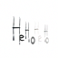

\(\bar\alpha_t\): Noise coefficient for step \(t\)
\(x_0\): Original clean image
\(\epsilon\): Random noise
Steps:
Add varying levels of noise to the Berkeley Campanile image.
Generate noisy images for \(t=250, 500, 750\).
Berkeley Campanilet=250t=500t=750
1.2 Classical Denoising
In this section, Gaussian blur is applied to noisy images generated from the forward process to evaluate the denoising quality. Steps:
Use the forward() function to generate images at different noise levels.
Apply Gaussian blur (kernel_size=5) to denoise the images.
Compare the denoising results for \(t=250, 500, 750\).
Noisy vs. Gaussian Blur Denoising Campanile at \(t=250\)Noisy vs. Gaussian Blur Denoising Campanile at \(t=500\)Noisy vs. Gaussian Blur Denoising Campanile at \(t=750\)
1.3 One-Step Denoising
In this section, the goal is to denoise images in one step by predicting noise using a UNet model and reconstructing the original image based on the given formula:
Noisy Campanile vs. One-Step Denoised Campanile at t=250Noisy Campanile vs. One-Step Denoised Campanile at t=500Noisy Campanile vs. One-Step Denoised Campanile at t=750
1.4 Iterative Denoising
In this section, the iterative denoising process is performed by gradually refining the noisy image using the formula:
Add noise to the original image using the forward function.
Denoise the image while preserving key features.
Test different noise levels (\(i_{start}=1, 3, 5, 7, 10, 20\)).
image at i_start=1image at i_start=3image at i_start=5image at i_start=7image at i_start=10image at i_start=20Original Image
image at i_start=1image at i_start=3image at i_start=5image at i_start=7image at i_start=10

image at i_start=20Original Image
image at i_start=1image at i_start=3image at i_start=5image at i_start=7image at i_start=10image at i_start=20Original Image
1.7.2 Inpainting
Steps:
Initialize the noisy image and apply a mask.
Replace the masked region with noise and preserve the unmasked region.
Iteratively refine the masked region to generate a complete image.
Original ImageMaskTo ReplaceTo Replace
Original ImageMaskTo ReplaceTo Replace
1.7.3 Text-Conditional Image-to-Image Translation
In this section, specific text prompts are used to guide the image generation process. The noise level controls how much of the original image's features are retained. Steps:
Add noise to the original image using the forward function.
Denoise the image using a text prompt to guide the generation.
Test the effect of different noise levels (\(1, 3, 5, 7, 10, 20\)).
Image at Noise Level 1Image at Noise Level 3Image at Noise Level 5Image at Noise Level 7Image at Noise Level 10Image at Noise Level 20Campanile
Image at Noise Level 1Image at Noise Level 3Image at Noise Level 5Image at Noise Level 7Image at Noise Level 10Image at Noise Level 20Campanile
Image at Noise Level 1Image at Noise Level 3Image at Noise Level 5Image at Noise Level 7Image at Noise Level 10Image at Noise Level 20Campanile
1.8 Visual Anagrams
In this section, we create visual anagrams by averaging noise estimations from two different prompts, one for the image and one for its flipped version.
Key formulas:
Noise estimation for original image: \( \epsilon_1 = UNet(x_t, t, p_1) \)


.png)